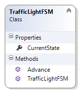
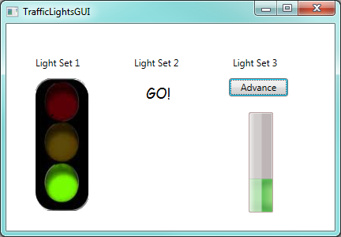
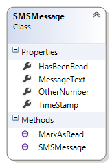
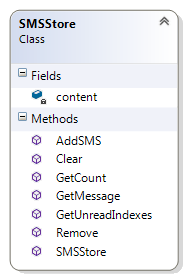
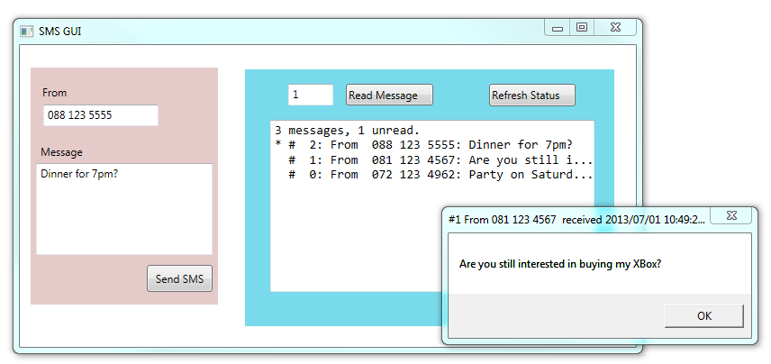

26. Writing our own Classes¶
A class is a type. Up until this point in the book we’ve seen many classes and objects — Button, Canvas, Turtle, Random, Timer, etc. are all classes that we’ve used, but we’ve not yet designed our own classes (other than GUI windows). In this chapter we’ll learn to design our own (non-GUI) classes.
It is useful to think of a class as a factory for creating many objects of the type.
So we’ve been able to use a class like a factory, e.g. the Button class gives rise to many Button instances, or we can create many Timer instances, or many Turtle objects:
1 2 3 4 5 | Turtle tess, alex; // define two variables that can refer to type Turtle ...
// and somewhere else in the code
tess = new Turtle(playground, 10, 10); // Ask the factory to create a turtle
alex = new Turtle(playground, 90, 90); // and now manufacture another turtle!
|
So breaking our programs into multiple classes (instead of doing everything in one big class) has two really important advantages:
- It allows us to create many objects, all independent and disentangled from each other.
- It is an essential tool for managing bigger tasks with more complexity.
An object, as we’ve already seen, allows us to encapsulate, or chunk together,
two main things: some state of the object, and some functionality for the object.
The state can be internal to the object — private — or it can be
exposed via public properties. Think about turtles again — each one has its own
Heading, its own BrushWidth, and so on. They also have functionality —
the things they can do. These are the public methods, like Forward or Stamp.
26.1. Object-oriented programming¶
In the Events chapter we animated some traffic lights. Go back to the traffic-light example there, and notice that we had three important abstractions, or “mental chunks” for the problem:
- We used a state machine to represent the Model (the internal mechanism or the “business logic”), of how traffic lights should work.
- There was a View of the traffic lights — some pictures that we changed in the GUI as the program ran.
- There was a source of events — timer tick events in this case, which was a Controller for the system. Buttons, scrollbars, menus, etc. are common parts of the controller in a GUI program.
The separation of problems so that we organize them as three different parts, a Model, a View, and a Controller, has turned out to be a really useful technique for designing software and games. The controller responds to the keyboard, mouse, gamepad, touchscreen, etc.), and it drives the changes in the model. Then the controller gets the view to show some representation of the model and its changes.
The way that we break up and organize programs into component parts is called a software architecture. Model-View-Controller (also called MVC for short) is one popular architecture.
We can get a nice overview at http://en.wikipedia.org/wiki/Model-view-controller.
Our working problem
Here we’re going to re-implement the traffic lights, with some twists.
We now require three different sets of traffic lights. Each will have its own controller: one can be controlled by a timer, one by a keypress, and one by having the user explicitly click a button.
We’ll need three separate state machines — internal engines for the model of how the lights work. Here we’ll separate the logic for what the state machine should do into its own separate class, and we’ll create three instances of that class, one for each of the different sets of traffic lights.
And finally, we’ll have three different ways to visualize our traffic lights. One can use our pictures from the earlier chapter, one can just have some text output to say what the light is doing, and ... (we’ll make up something when we get there...).
26.2. Designing a class¶
We’ll want our own class to encapsulate (encapsulate means to enclose, as if in a capsule) the state and the functionality for a State Machine. One of the popular ways of figuring out how to break a complex system into more manageable components is to to write this information on a index card that is divided into three parts:
- What is the name of the class?
- What responsibilities will it (or the objects we instantiate from it) have,
- What other (types of) objects will it collaborate with?
See http://en.wikipedia.org/wiki/Class-responsibility-collaboration_card for more detail, but this is enough to get us started.
- Let’s call our class
TrafficLightFSM(FSM for finite state machine). - Its responsibilities will be
- to keep track of what state the state machine is currently in,
- to advance (or transition) from the current state to its next state.
- Its collaborators will be
- the controller logic in the GUI part of our program,
- the viewer logic in the GUI part of our program.
One we’ve figured out what classes we want, (just the one in this case) we’ll decide what properties and methods we need to give our objects so that they can fulfil their responsibilities.
For our very simple objects, let’s start with one
property — the CurrentState that the machine is in, and two methods:
the constructor method to initialize new objects, and a method called
AdvanceState().
To get a new class in our project in Visual Studio, right-click on our
project in the Solution Explorer pane, and choose Add | Class... You’ll
be prompted for a name (enter TrafficLightFSM.cs). Visual Studio will
now generate a new class skeleton and add it to our project. It will open
the code, and will look something like this:
1 2 3 4 5 6 7 8 9 | using System;
...
namespace Fragments
{
class TrafficLightFSM
{
}
}
|
Your namespace may be different to the example above but will be the same as the namespace used
in your MainWindow, and in any other classes we create later.
(Putting all the classes in our project into
the same namespace makes it easier for us, because they can all “see” each
other without having to add any extra using directives at the top.)
Now we can write our methods and our property definitions or private variable definitions inside the class. Here’s what we’ll put in place of lines 6-8 now:
1 2 3 4 5 6 7 8 9 10 11 12 13 14 15 16 17 18 19 20 21 22 23 24 25 | class TrafficLightFSM
{
public int CurrentState { get; private set; }
public TrafficLightFSM()
{
CurrentState = 0;
}
public void Advance()
{
switch (CurrentState)
{
case 0:
CurrentState = 1;
break;
case 1:
CurrentState = 2;
break;
case 2:
CurrentState = 0;
break;
}
}
}
|
Lines 5-8 define the constructor for our new class — the code necessary
to initialize a new object of this type to its factory settings. The distinguishing
thing about the constructor is that it has no return type — not even the
keyword void — and its name must be identical to the class name. If we do provide a
constructor, it will be automatically called whenever we instantiate a new object of this type.
Lines 10-24 provide the functionality we wanted — the same logic as we saw in the “More Events Handling” chapter of this book.
Line 3 is new: it shows that we’re defining a new property of
type int. A property is like a variable, but with finer
control over how it can be used — this one says that the property is public —
it can be accessed outside the class (others can get its value),
but the private modifier on set restricts the property so that
it can only be set (assigned a new value) by methods within this class.
If we right-click on the class name in the Solution Explorer and choose the option “View Class Diagram”, we’ll get a diagram of the class (this feature may not be in all versions of Visual Studio):
A class diagram is a widely used notation that allows software developers to express different aspects of their design. Many people will tell us that we should draw our diagram first, and write our class according to our diagram. In Visual Studio, because we can get the diagram from a class it seems sometimes easier just to start with the class.
Well done! We’ve written our very first (non GUI) class. Now let’s make some objects of this type, and put them to good use.
26.3. Three sets of traffic lights — The Controllers and the Views¶
In the kinds of programs we write the Controllers and the Views are both intertwined in our Window class, so they’re not fantastically well separated. We’ll make a special effort to separate them in our thinking, at least.
Here’s what the finished product will look like:
Let’s begin by just getting the first set of lights to work. Most of the code is identical to what we saw previously in the More Event Handling chapter, except that the logic for the state machine is now in its own class.
1 2 3 4 5 6 7 8 9 10 11 12 13 14 15 16 17 18 19 20 21 22 23 24 25 26 27 28 29 30 | private BitmapImage[] thePics;
private TrafficLightFSM model1, model2, model3;
private System.Windows.Threading.DispatcherTimer theTimer;
public TrafficLightsGUI()
{
InitializeComponent();
model1 = new TrafficLightFSM();
model2 = new TrafficLightFSM();
model3 = new TrafficLightFSM();
string inThisProject = "pack://application:,,,/"; // the magic spell ...
thePics = new BitmapImage[] {
new BitmapImage(new Uri(inThisProject + "TrafficLightGreen.png")),
new BitmapImage(new Uri(inThisProject + "TrafficLightAmber.png")),
new BitmapImage(new Uri(inThisProject + "TrafficLightRed.png")) };
theTimer = new System.Windows.Threading.DispatcherTimer();
theTimer.Tick += theTimer_Tick;
theTimer.Interval = TimeSpan.FromMilliseconds(500);
theTimer.Start();
}
private void theTimer_Tick(object sender, EventArgs e)
{ // advance the model
model1.Advance();
// update the view
image1.Source = thePics[model1.CurrentState];
}
|
In line 2 we define variables for all three models, and at lines 9-11 we instantiate all three. Otherwise the code is pretty similar to what it was before: our class constructor instantiates all the objects it needs, and starts the timer. When the timer ticks we advance our model, and then we update the view by asking the model for its current state, and using that to choose the picture that is displayed by the image control.
Our second set of traffic lights is controlled by a keyboard event,
so we create an event handler for the Window’s KeyDown event, and respond to
a keypress like this:
1 2 3 4 5 6 7 8 9 10 11 12 13 14 15 16 17 18 19 | private void Window_KeyDown(object sender, KeyEventArgs e)
{
switch (e.Key)
{
// Controller for light set 2 - press the N key for Next
case Key.N:
model2.Advance();
switch (model2.CurrentState) // update view
{
case 0: lblOutputSet2.Content = "GO!";
break;
case 1: lblOutputSet2.Content = "PAUSE!";
break;
case 2: lblOutputSet2.Content = "STOP!";
break;
}
break;
}
}
|
So our “view” in this case is just some text that is displayed in a label. To reinforce the idea that the view is now independent from the model and controller, perhaps we can consider how easily we could change the view to display Spanish rather than English in the label.
Finally, the third set of traffic lights is controlled by clicking the button. So here is the code behind the button click event:
1 2 3 4 5 6 7 8 9 10 11 12 13 14 15 16 | private void btnAdvance_Click(object sender, RoutedEventArgs e)
{
model3.Advance();
switch (model3.CurrentState) // update view
{
case 0: progressBar1.Value = 33;
progressBar1.Foreground = Brushes.Green;
break;
case 1: progressBar1.Value = 66;
progressBar1.Foreground = Brushes.Orange;
break;
case 2: progressBar1.Value = 100;
progressBar1.Foreground = Brushes.Red;
break;
}
}
|
We’ve not used a ProgressBar control before, but they’re
quite easy. We drag one onto our Window, and we set its orientation property
to make it grow vertically instead of horizontally. It shows progress according to
the number we assign to its Value property. (By default, 0 represents
no progress, 100 represents “100% progress”.)
We also change the brush colour to view the different states.
26.4. The keyword this¶
The keyword this is available in a class, and works like the English word “me”.
So every object can use a reference to itself. So this.CurrentState means “my CurrentState”.
Normally we don’t need to use the keyword explicitly. But it is really convenient in one
particular situation — in a class constructor.
So let us change our TrafficLightFSM constructor. Instead of always creating an FSM which begins
in state 0, we now want the caller to be able to pass an argument to the constructor, to set the initial state:
1 2 3 4 5 6 7 8 9 10 11 | class TrafficLightFSM
{
public int CurrentState { get; private set; }
public TrafficLightFSM(int CurrentState)
{
this.CurrentState = CurrentState;
}
...
}
|
The tricky bit is at line 7. We now have a parameter at line 5 with exactly
the same name as our property in line 3. We recall our
discussion about scope lookup rules in Chapter 24: CurrentState
means the most closely nested definition of the name.
Which is the parameter on line 5.
Our new keyword, this, can be used to explicitly qualify the a name
to mean “the CurrentState that belongs to me, the object”
(i.e. the one defined at line 3, in class-level scope.)
It is sometimes easier just to choose another name for the parameter, but
using the same names is popular practice in C# (and in Java). So we’ll need
to use this to work around the scope rules to let us access the class-level
variable of the name. So we’re sure to see it often.
26.5. Summary¶
By making TrafficLightFSM into its own class we’ve
simplified the logic, especially when we want multiple instances, each with
their own state. It would be tricky to have all the logic and variables for three
separate state machines tangled up inside our Window class.
Our first TrafficLightFSM class was really simple: one property and one
method (apart from the constructor). But the powerful thing is the idea:
as we put more state and logic into our objects, we’ll see more
benefits from this approach of breaking programs into
separate components that interact with each other. (Consider how complicated the
behaviour of a Window or a Turtle object is, or for any of the GUI controls
that we use so easily. Having classes to organize and manage this complexity is essential!)
26.6. The bigger picture¶
C# is a fully object-oriented programming language: every method must belong to a class, and the only way to organize computation is by having classes that give rise to objects that can interact with each other. Java is like this too.
An earlier style of organizing computation is called procedural (or imperative) programming. Look it up. Fortran, C, BASIC and Pascal are popular languages that support this style.
Some procedural languages added objects and classes to their procedural core, and they now have a (sometimes messy) mixture that can be used in either style. C++, Python, Visual Basic, and some newer versions of Pascal (e.g. Delphi Pascal) work like this.
26.7. Glossary¶
- class
- A class defines a new type of object. A class can also be thought of as a template or a blueprint for the objects that are created according to its specifications.
- constructor
- Every class may have special method that is invoked automatically to initialize a new object to its factory-default state.
- instance
- An object whose type is of some class. Instance and object are used interchangeably.
- instantiate
- To create an instance of a class, and to run its constructor, if one exists.
- method
- A method is defined inside a class definition and is invoked on objects of that class. Methods give objects their behaviour.
- Model-View-Controller (MVC)
- A popular way of breaking software systems into three co-operating components.
- object
- The run-time entity that is often used to represent a real-world thing. It bundles together the state (data) and the behaviour appropriate for that kind of thing. Instance and object are used interchangeably.
- software architecture
- The overall design of a large software system.
this- A C# keyword that refers to the current instance of the class.
- object-oriented programming
- A powerful style of programming in which data and the operations that manipulate it are organized into objects.
26.8. Exercises¶
Write a class definition for an SMSMessage that implements the class diagram here. It should contain four properties that are privately settable, but publically gettable. The constructor should initialize the sender’s number and the message from parameters, and it should also set
HasBeenReadto false, set theTimeStamptoDateTime.Now. TheMarkAsReadmethod should changeHasBeenReadto true.Create a new class, SMSStore, that can be used for an SMS inbox or outbox on a cellphone. It should implement the class diagram here.
1
SMSStore myInbox = new SMSStore();
This store can hold multiple
SMSMessageobjects. (Hint: use aList<SMSMessage>!)An SMSStore object should provide methods with these signatures:
1 2 3 4 5 6 7 8 9 10 11 12 13 14 15
void AddSMS(string fromNumber, string textOfSMS); // Makes a new SMSMessage object, inserts it after other messages. int GetCount(); // Returns the number of sms messages in the store. List<int> GetUnreadIndexes(); // Returns list of indexes of all not-yet-viewed SMS messages SMSMessage GetMessage(int i); // Return message[i]. // If there is no message at position i, throw an exception. void Remove(int i); // Delete the message at index i (or throw an exception) void Clear(); // Delete all messages from the store
Write the class, create a message store object, write tests for these methods, and implement the methods.
Make a GUI like the one shown. In one half of the screen you can be in the role of a friend, and “send” new SMS messages to your inbox. In the other half of the screen you can be the phone “user” — you’ll be able to refresh the status (the view) of your inbox. (In this sample I used two Canvas controls and set different background colours to provide the two halves of the screen.)
You can read any message by entering its index number.
Extend your SMS GUI so that you don’t need the “Refresh Status” button — the status automatically updates itself whenever you add a message to the Inbox, or when a message is read. Extend the interface so that the user can delete a message, or clear all messages from the Inbox.
Add another class called AddressBook to your program. Pre-program some phone numbers and names into the address book. (We won’t worry about adding new contacts or deleting contacts, or updating their information, although this could be a nice exercise too!) Now change your GUI from the previous question so that if the SMS arrives from a known contact, their name will be shown in the GUI instead of their number.
Do the following experiment on your phone. Find an SMS in your Inbox for which you have no contact details. Add a dummy contact for that number. Does your Inbox now show the dummy contact name, or does it still show the original number? What happens if you now delete the dummy contact? Do you think your phone searches your contact list when the SMS arrives, or when you want to see your Inbox, or does it update your Inbox whenever you make changes to your contact list?
Take an existing class, and add the qualifier
thisto every use of a member (variable, method, property) so that you build a good understanding that an unqualified name often resolves (using the normal scope rules) to the local scope. But thethiskeyword explicitly forces the name to be at class-level scope.